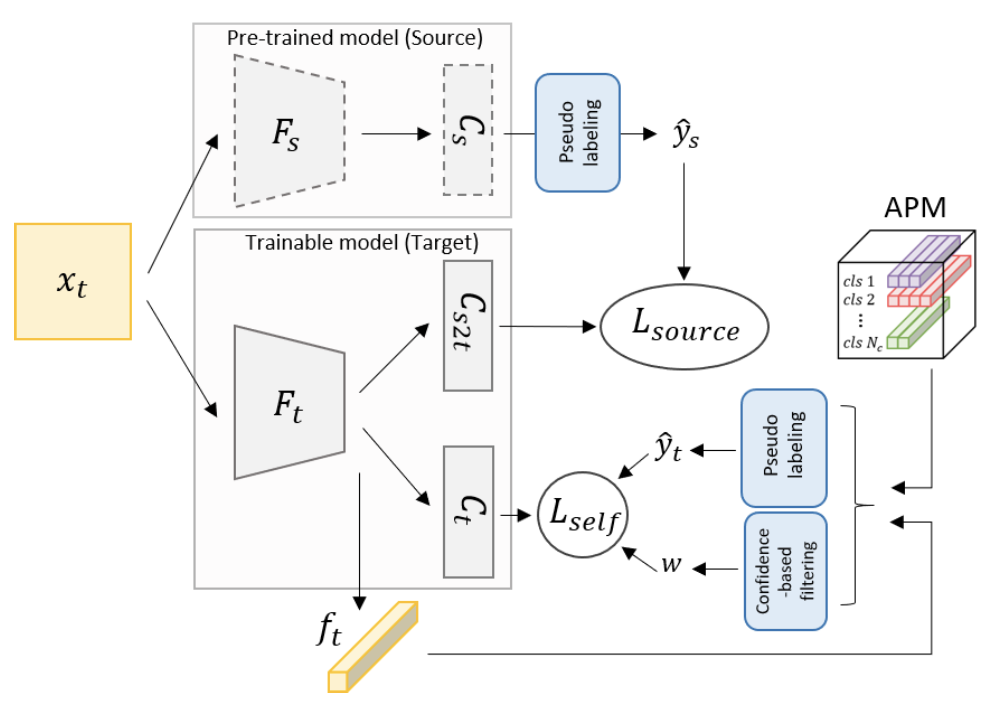

<div class="col-lg-12">
  <div class="row d-flex flex-wrap align-items-center">
    <div class="col-md-3">
        
    </div>
    <div class="col-md-9">
      <h3>
        <strong>Domain Adaptation without Source Data</strong>
        <strong> [</strong><a href="https://ieeexplore.ieee.org/abstract/document/9528982/" target="_blank">PDF</a><strong>] </strong>
      </h3>
      <p style="line-height:22px; font-size: 18px;" class="mt-0"> <strong>Youngeun Kim</strong>, Donghyeon Cho, Kyeongtak Han, Priyadarshini Panda, Sungeun Hong
      <br> IEEE Transactions on Artificial Intelligence (TAI) 2021 </p>
    </div>
    <hr class="mt-0 mb-0">
  </div>
</div>
